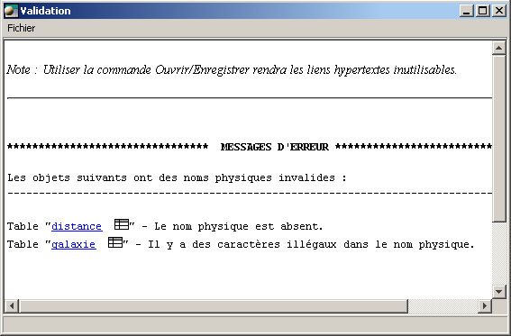

La validation

Utiliser la validation pour prévenir les erreurs
Open ModelSphere offre des validations SGBD spécifiques pour empêcher les
erreurs les plus communes dans la génération de Langage de Définition de Données
(DDL). Il est recommandé de valider l'information de la base de données
avant toute opération de génération.
Vous pouvez valider votre base de données en suivant ces deux étapes :
- Sélectionnez la base de données et cliquez-la avec le bouton droit.
- Dans le menu contextuel, choisissez Valider .
Un rapport est généré, vous indiquant les erreurs ainsi que des hyperliens vers les objets concernés.

Liste des validations communes (génériques)
Les validations suivantes sont disponibles sur chaque base de données.
- Chaque objet a un nom physique.
a. La longueur du nom physique de chaque objet n'excède pas la longueur
maximale.
b. Le nom physique de chaque objet contient seulement des caractères valides.
c. Le nom physique de chaque objet n’est pas un mot réservé par la transmission
SGBD.
d. Le nom physique de chaque objet est unique à l'intérieur de l’espace de
nommage.
- Chaque domaine est lié à un type.
- Chaque colonne est lié à un type.
- Chaque table contient au moins une colonne.
- Toutes les clés primaires, uniques ou étrangères n'excèdent pas le nombre
maximal de colonnes.
- Pour chaque colonne rattachée à un type, on valide l’obligation ou l’interdiction
d’avoir une valeur dans le champ “Longueur ”.
- Pour chaque colonne rattachée à un type, on valide l’obligation ou l’interdiction
d’avoir une valeur dans le champ “Nombre de décimales ”.
- Chaque index et clé primaire / unique / étrangère n'a aucune colonne avec
un type interdit.
- Chaque déclencheur contient des instructions.
- Chaque procédure contient des instructions.
- Chaque contrainte check contient des instructions.
- Chaque vue a une règle de sélection.